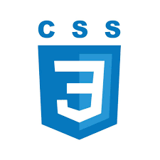
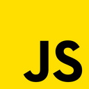

Zručnosti

|
 |  |

|
HTMLTvorba základnej štruktúry webových stránok Práca s nadpismi, odstavcami, obrázkami, odkazmi, zoznamami Formuláre (inputy, tlačidlá, validácia) Používanie semantických značiek (nav, section, article, footer...) Vkladanie videí, iFrame, ikon a externých zdrojov |
CSSŠtýlovanie textov, farieb, pozadí, rozloženia prvkov Flexbox a Grid pre responzívny dizajn Práca s animáciami, prechodmi a pseudo-triedami Prispôsobenie dizajnu pre mobily a tablety (Media queries) Vytváranie moderných, čistých a používateľsky prívetivých rozhraní |
JavaScriptPremenné, podmienky, cykly, funkcie Práca s DOM - interaktivita na stránke (napr. kliknutia, prepínanie menu) Základy objektov a polí Jednoduché skripty pre dynamické prvky (napr.slider, kalkulačka) Pochopenie event listenerov |
JavaPremenné, cykly, podmienky, metódy Triedy a objekty - OOP Základy s konzolovým vystupom a výstupom Práca s poliami a základnými dátovými typmi |